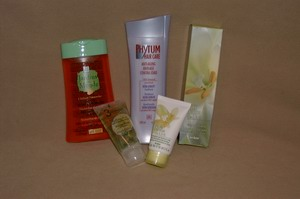

| Home | Greeting | Great land stories | Grot of poetry | Graphic album | Grandiose gadgets | Groan of the mind | Back | Next |
Страница 10. Конкурс!!! Отгадай загадки - 2005!!!
28 Февраля 2005г. завершился наш конкурс...
В чем сей конкурс состоял?
Хотите знать имя победителя?
Жаждете лицезреть ответы на загадки?
Напомнить сами загадки?
Дорогие Друзья! С Днем Святого Валентина Вас!
Накануне этого замечательного праздника - Дня Валентина, Дня
Любви, хочу предложить вашему вниманию загадки. У меня есть традиция придумывать к Новому году загадки и развлекать
тем самым в новогоднюю ночь народ. Ну а вас, дорогие друзья,
развлекать накануне Дня Валентина.
Почти все загадки основаны на игре слов-букв. Например, такая загадка:
Ты часто видишь меня ночью темной,
А вставишь "л", - животным сделаюсь огромным.
Ответ: сон - сЛон
И дальше в том же духе. Если точно не указывается, куда вставлять буквы или какие по счету буквы заменять другими,
это значит, что буквы сии могут быть где угодно:
в начале слова, в середине, в конце. В то же время вам могут встретиться загадки ассоциативного характера (не
связанные с игрой букв), а то и просто загадки как сами по себе :-).
Конкурс сей проводится ежегодно, начиная с 2003 года. Так что я очень рекомендую вам хотя бы одним глазком взглянуть
на загадки прошлых лет
вместе с ответами: 2003-й год и 2004-й год, с
тем чтобы
поиметь какое-то представление о моем логическом ходе мыслей :-). Особенно это будет полезно людям, не принимавшим
пока участие ни в одном из упомянутых конкурсов.
Хоть на указанных страницах уже все подробно расписано, я все-таки еще раз определю правила и порядок раздачи
призов.
В чем состоит конкурс? Человек, который пришлет МАКСИМАЛЬНОЕ количество правильных ответов на загадки, получит супер-приз от
Yves Rocher, независимо
от того,
в какой бы части света сей остроумный победитель не находился. Более того, также получат призы
от
Yves Rocher и люди, занявшие 2-е и 3-е места.
Ответы присылайте на адрес
. Просто указывайте номер загадки и Ваш ответ. Ответ, как правило, состоит
из двух и более слов, завуалированных в загадке, хотя в некоторых случаях может представлять только одно слово.
В своем письме Вы можете также привести ассоциативный ряд, подтолкнувший Вас к разгадке. И я буду очень
признательна, если Вы укажете, какая загадка Вам
больше всего понравилась. Таким образом, это будет конкурс и для меня тоже :).
Правильные ответы и
имена победителей будут анонсированны на этой же страничке! Игра будет иметь продолжение либо до тех пор, пока я не
получу 3 первых письма со всеми правильными ответами, либо до
28 февраля 2005 года (включительно). В последнем случае победителями будут названы
те, кто первыми пришлют максимальное количество правильных отгадок. Свой адрес Вы можете сообщить
сразу же, в письме с ответами. В противном случае, я обязательно дам Вам знать о том, что Вы выиграли этот конкурс и
самолично запрошу Ваш адрес.
В качестве призов, как уже было сказано выше, предлагаются наборы косметических и других продуктов от Yves Rocher.
Мужчины! Вам дается большой шанс приготовить замечательный подарок для своей Любимой к 8 Марта!
Слева вы можете лицезреть фотографию супер-приза. А ниже даны фотографии призов
для участников, которые займут второе и третье места. По сути, эти наборы
одинаковы, но "серебряный" призер имеет право выбрать себе подарок по желанию: левый или правый.

Warning 1: Не забывайте про традиционное правило!!!
Главный Победитель (занявший 1 место) прошлого года не имеет права участвовать в нынешнем году. Но только лишь
победитель прошлого года! Таким образом, Екатерина Осипова ("золотой" призер конкурса 2004 года),
к сожалению, не может принимать участие в конкурсе настоящего года. То есть поучаствовать, конечно, милости просим,
но вот победителем Вас, Катя, никак нельзя будет сделать в 2005-м году, даже если Вы отгадаете все загадки вперед
всех.
В то же время главные победители 2003 года - Ольга и Артем Алексеенко, - получают наконец-то право вновь вернуться в
игру и шанс выиграть. Добро пожаловать!
Warning 2: Людей, дорогих сердцу друзей, которых я имела счастие лицезреть в новогоднюю
ночь, очень прошу не присылать ответы и не подсказывать
остальным участникам конкурса :-).
Дорогие читатели! Мы с мужем желаем всем вам крепкой, красивой, бесконечной, независимой Любви!!! Любовь - это
высшее счастье, высшее благо! Любовь - это Абсолют!
Будьте счастливы, друзья! Любите и будьте любимы! Во всем успехов вам! И, главное, в нашем конкурсе! Я с нетерпением
жду ваших ответов. Наслаждайтесь и ловите фан! :-)
С уважением, любовью и признательностью,
Наташа
Итак, победители... Обладателями главного и, к сожалению, единственного приза стали опять-таки единственные его
участники - Ольга и
Артем Алексеенко из Бостона. Огромное спасибо вам, ребята! Вам, кому не безразлично то, что я от всей души стараюсь
принести людям какую-то радость, сделать их
хотя бы на миг счастливее... Вам, кто проникнулся уважением ко мне и к моим скромным мини-творениям... Вам, кто
ценит мой труд и мои деньги, которые я вкладываю
каждый год на приобретение призов, искренне надеясь, что и читатели моих писем не останутся в долгу, но ответят мне
тем же: искренностью, добротой, теплом, юмором, Любовью...
Однако же, как показывает практика, таких благодарных читателей далеко не много... :-( Посему, этот ежегодный,
третий по счету, конкурс был также и последний. Ибо по причине
отсутствия участников оного, я решила, что продолжать сию традицию больше не имеет смысла...
Супер-приз, а также один из призов за предполагаемые 2-е и 3-е места заслуженно
уходят в Бостон!
В нижеприведенной таблице (последняя дань традиции, в своем роде) приводятся все отгаданные дружной семьей
Алексеенко загадки:
Цвета означают:
-
Правильная разгадка
-
Неправильная разгадка или
отсутствует
#
Победитель
Страна
1
2
3
4
5
6
7
8
9
10
11
12
13
14
15
16
17
18
19
20
21
22
1
Ольга & Артем
Алексеенко
США
Загадка № 1
На первый слог поставьте ударенье, -
Вам целый мир открыт, но без отелей.
Второму слогу отдадите предпочтенье, -
Материальчик обретете для постели.
Загадка № 2
Во мне дофигища водицы!
Ведь рыбе же надо напиться.
А Вам, видно, нужно покушать.
...Нет, только не трогайте уши!
Загадка № 3
Паролем к карточке послужит первый слог.
Второе слово - карточный наборчик.
Три буквы сзади - программизма Бог.
А в целом, может быть и переборчик.
Загадка № 4
Два первых слога от того,
Кого Мягков расспрашивал.
Последний звук спроси у львов,
Которые не жравшие.
А слово все спроси у той,
Которой уже нет.
Федор Михалыча трудом
Ее простыл уж след.
Загадка № 5
Немецкий (пусть артикль?) воткните изначально.
А женщину, как водится, поставите второй.
Но как бы это дамам казалось не печально,
Они его плодами "стравили" род мужской.
Загадка № 6
Теми, кто давно там не был,
Я не ласково зовусь.
Птицею под черным небом
Я отчаянно тружусь.
А под светом дня у деток
Подрабатываю я.
Только ветер ведь не редок:
Крепость пала, - я как я.
Загадка № 7
Когда глаза мы открываем - закрываем,
Вы букву О на А должны сменить,
Три буквы сзади у глагола удалить
И няню Пушкина в конце добавить,
Не забывая букву Н на Т исправить. -
Приятно эту вещь со льдом испить.
Загадка № 8
Два первых слога от мясного
Кусмана с чесноком.
Последний слог - опять не ново:
Во Франции кругом
Сей дивный слог, Дюма согласно,
Считался мерой, но
По праздникам и ежечасно
Рекой лилось вино.
Загадка № 9
Он после смены лихо изменяется:
Торчали щепки, - превратились в гладь;
Был скрип, - ни звука, благодать;
Вместо усов, - глядишь, пушок румянится;
Да и сопрано это не унять...
Загадка № 10
Компьютерная "ладошка"
Гребет информацию ложкой.
Добавим лишь звонкий, неистовый крик, -
И южного дерева образ возник.
Загадка № 11
Крупа - у ног...
А где ей еще быть? -
Коль Г на К отважитесь сменить
И предадитесь прелестям искусства.
Это - красиво, но не очень вкусно.
Загадка № 12
"Английский" автобус куда-то посеян.
Печальный настрой легким бризом развеян.
Стаканчик винишка, - и навеселе я.
С подсветкой и музыкой томно балдею.
Загадка № 13
Мы называем так цикл в природе.
Мы называем так денег движенье.
Лишь в полнолунье он где-то там бродит,
Если добавить к нему отраженье
Дневного света лучей - лишь 2 звука.
М-да... Лучше не шастать в округе от скуки.
Загадка № 14
Переставь две буквы в песне задом наперед.
Букву И воткни в нее же (только не вперед).
Жизнь покажется немножечко богатей:
Совсем не страньше, только чудесатей.
Загадка № 15
"Английская" машина,
От груди половина,
Умелец на трибуне
Без буквы без начальной.
- Все, чтоб бензин плескался
Не медленно-печально,
А под контролем верным:
Легко и равномерно.
Загадка № 16
Когда Вы встретите знакомое лицо
В той местности, что Вы не ожидали,
Не спросите Вы: "Как сюда попали?"
Перефразируя "Какой судьбою здесь?", -
Мы спросим лишь: "Как тут?" - И ждем ответа.
И вот на блюдце ультрафиолета
Вам злобное растенье принесли.
Какой же звук Вы зря произнесли?
Загадка № 17
"Весь горизонт в огне -
И ясен нестерпимо..."
Но если кирпичи положишь мимо,
То не узришь и этот горизонт.
С поэтом не судьба сразиться
Строительной, одноименной единице.
И даже не возьмешь его на понт.
Загадка № 18
Второй вам слог подарит горбатое созданье.
Опаснейшая муха к вам сзади прислонится.
Извольте скушать тортик в кофейне или в чайной, -
И это слово, братцы, вам очень пригодится.
Загадка № 19
Автомобиль с глазами на лице,
Что выглядят, как круглые монетки.
Добавьте еще букву Л в конце.
Обратным словом для этой кривой ветки
Есть то, что у машины между ног, -
Распределитель тяги для дорог. -
Для снежных, мокрых и других дорог.
Загадка № 20
О люди! 18-я буква!
И чемоданчика остаток ей в конец.
Кто это будет? Усатый молодец.
Бельгиец незначительного роста,
Чью логику понять не так уж просто.
Но в заключение он блещет, как мудрец.
Загадка № 21
Индейское племя - в начале.
А хвостик весьма музыкален, -
Огинского произведенье.
Возьми лишь 3 буквы с конца.
Для "шубы", салатов и просто яйца
Продукт сей имеет значенье.
Загадка № 22
- Лютый мороз наступил.
- Бывает...
- Обжог мое сердце холодом.
- Верю.
- Он мягким, нежным снегом оттает.
А что так неистово бьется за дверью?
Отгадки!!!
Буквы или сочетания букв, заключенные в квадратные скобки [...], подлежат
удалению, дабы в конечном итоге получилось нужное слово.
Буквы, представленные в красном цвете, - либо взаимозаменяемые, либо дополнительные для образования нового слова,
либо ударные.
1.
Атлас - атлАс
2.
Уха
3.
PIN + колода + Ada [Augusta Lovelace]
(изобретательница первого в мире компьютера и языка программирования "Ада") => "Пиноколада" (коктейль
"Pinocolada")
4.
топо[ль] + "Pppp" => топор ("Преступление и наказание"
Ф.М.Достоевский)
5.
Der + Ева => дерево
6.
сова - совок (Советский Союз)
7.
м О->А рг[ать] + Ари Н->Т
а => "Маргарита" (коктейль "Margarita")
8.
буже[нина] + лье => Бужелье (французское красное вино)
9.
пол
10.
Palm + "Аааа!"
=> пальма
11.
Рис у ноГ => рисуноК
12.
bus + сеян => бассейн
13.
оборот + [д]ень => оборотень
14.
пеСНя - пеНСИя
15.
car - бю[ст] - [о]ратор => карбюратор
16.
кактус (звук "т" не тот :-))
17.
[Александр] Блок (поэт) - блок (строительная единица)
18.
[вер]блюд - Цэ-цэ => блюдце
19.
[Acura]
Integra + л => интеграл => дифференциал
20.
"Эр" + [риди]кюль => Эркюль Пуаро (известный детектив
- герой романов Агаты Кристи)
21.
Maya [Indian] - "[Поло]нез" => майонез
22.
ЛЮ[тый] + Б[ывает]
+ О[бжог] + В[ерю] => Любовь...
| Top | Home | Greeting | Great land stories | Grot of poetry | Graphic album | Grandiose gadgets | Groan of the mind | Back | Next |